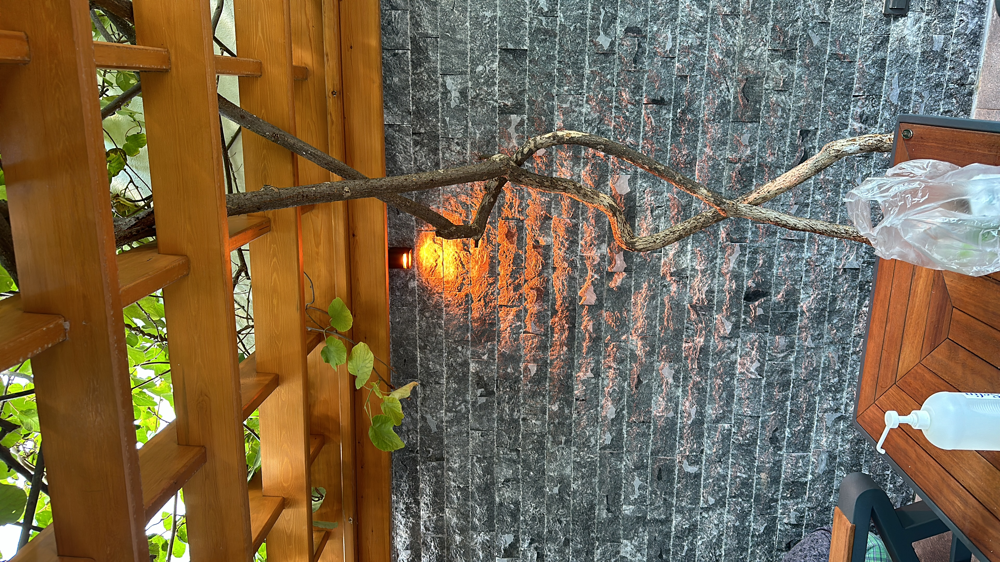
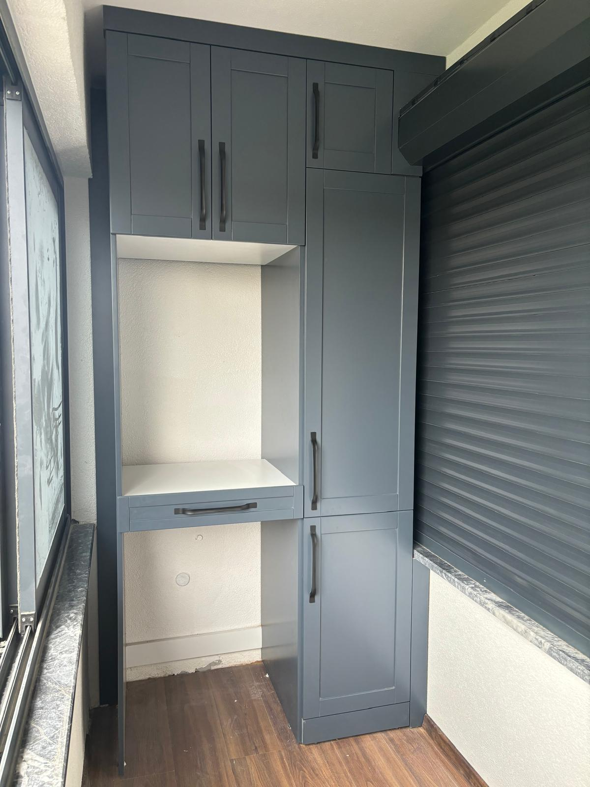
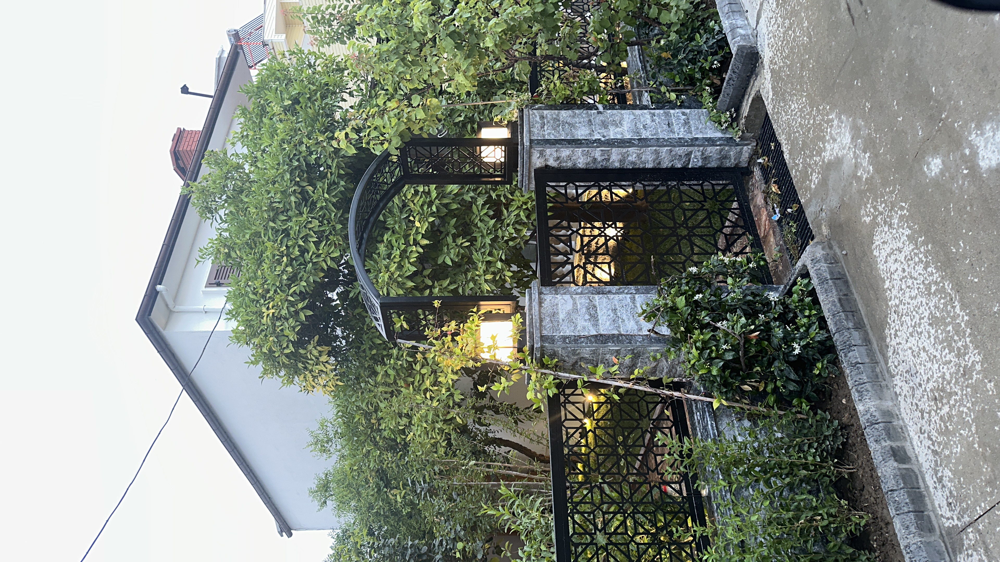
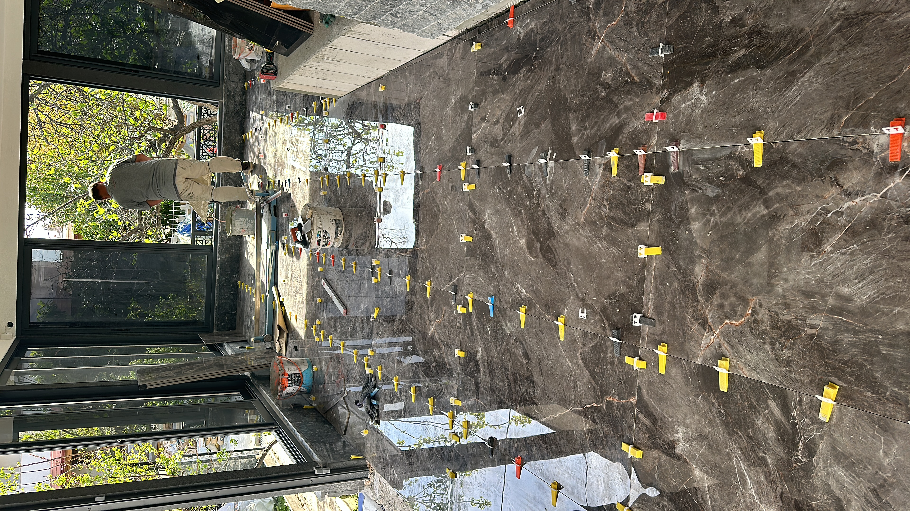
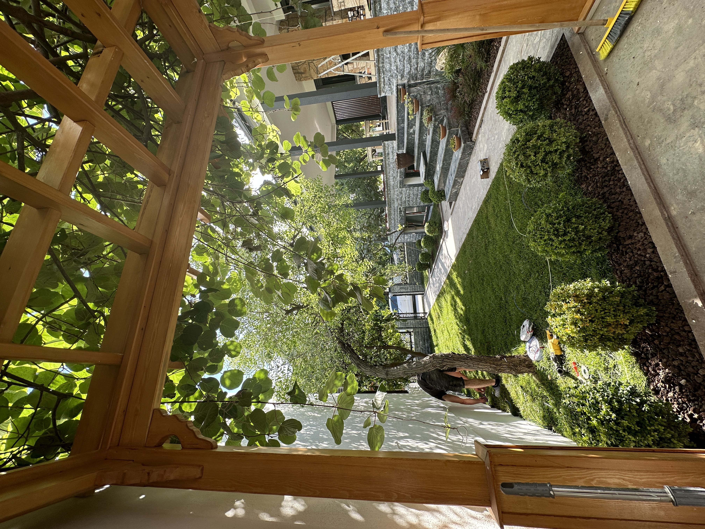
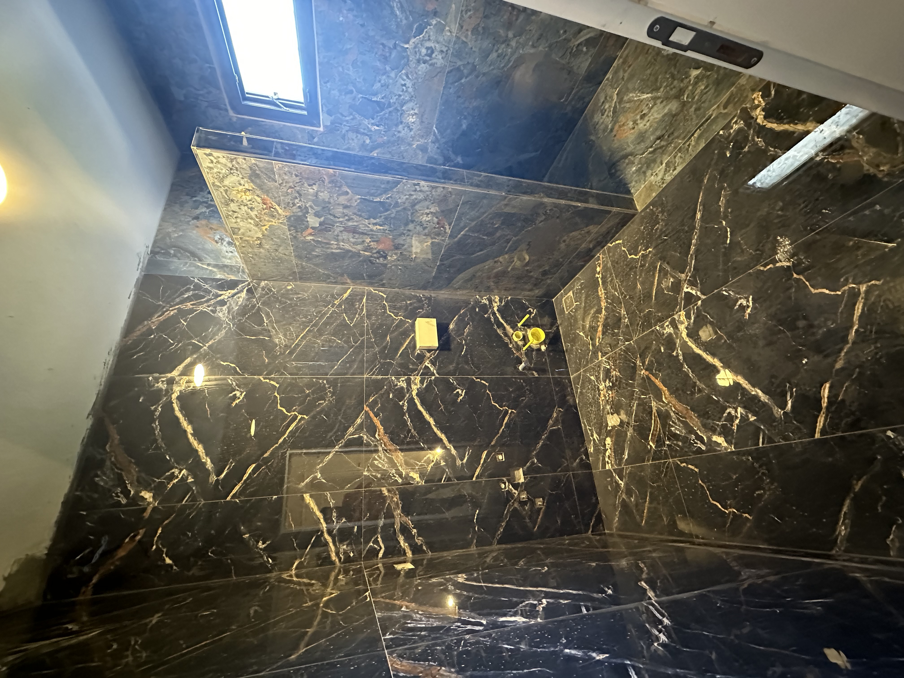
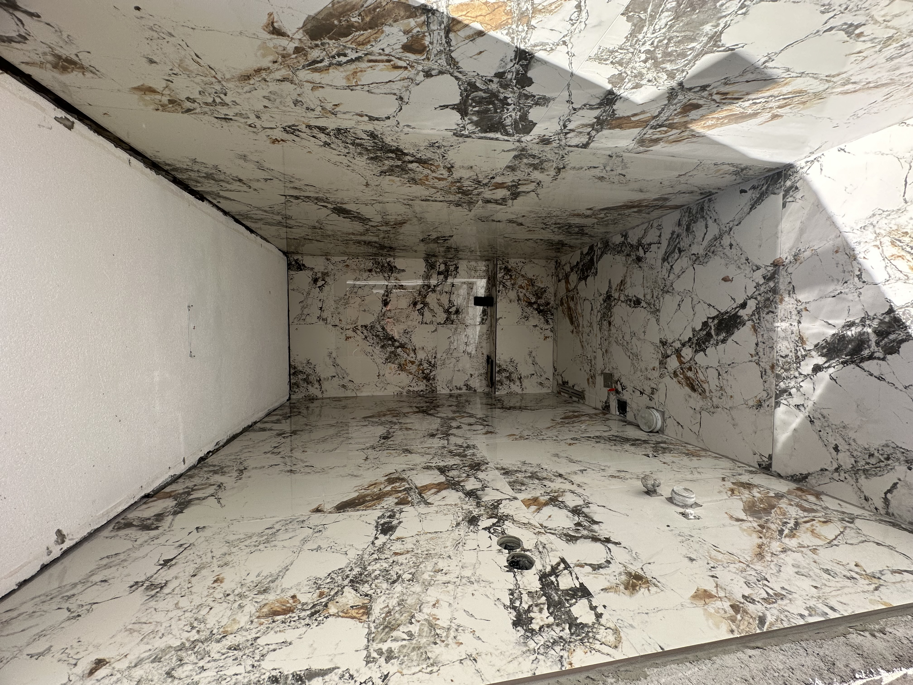

İç Mekan Uygulamaları ve Çevre Düzenleme
Islak hacim ve seramik uygulamalarından sabit mobilya detaylarına; taş yol, bahçe aydınlatması ve dış yaşam alanlarına uzanan tamamlanmış uygulamalar.








